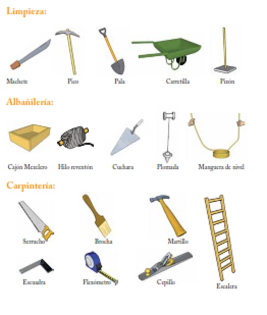

Herramientas
Para realizar las obras de limpieza y trazos en el terreno, para las obras del firme y para todo el proceso de trabajo de la madera, es necesario disponer de un conjunto de herramientas, mismas que pueden ser desde manuales hasta herramientas eléctricas portátiles. Las básicas para cada etapa son las siguientes:
